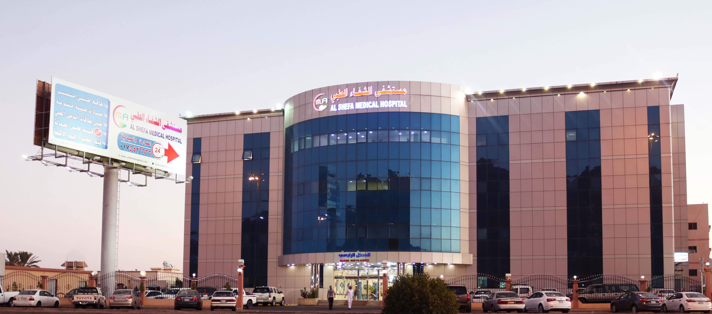

Founder
Founder: Prof. Dr. Sherif Abou El-Naga Al Shifa Hospital in Egypt is the largest center in the world in terms of capacity. It was established with the support of the Egyptian people and their friends from the Arab world. The hospital is a comprehensive institution dedicated to fighting childhood cancer and providing high-quality medical care to all patients free of charge and with complete fairness. Its vision is to become a global model for change toward a childhood without cancer and to be a center of excellence in healthcare through its support for quality, smart education, innovative scientific research, expansion projects, and its key role in cancer awareness and prevention. The hospital offers a wide range of the latest diagnostic and treatment services to achieve its goal of reaching global recovery rates of 80% to 85%.
Our Vision
Service Development
We continuously develop and expand our services to meet the growing needs of patients.
Staff Training
We ensure ongoing training for our staff to deliver the best possible healthcare.
Community Collaboration
We collaborate with various community entities to provide comprehensive health services.
Increasing Recovery Rates
We aim to increase recovery rates by providing effective healthcare.
Improving Survival Chances
We strive to improve patient survival through early diagnosis and appropriate treatment.
Community Health Promotion
We work on enhancing community health through disease prevention programs.
Reducing Burden
We aim to reduce the disease burden on society by offering effective healthcare.
Our Mission
Since 2017, Al Shifa Hospital has been a medical beacon of hope in Qena Governorate, delivering a noble humanitarian message and earning the trust of over one million patients. With more than 50,000 successful surgeries performed by skilled hands, we bring hope back to life. The hospital is equipped with the latest advanced diagnostic and therapeutic equipment and is staffed by a distinguished team of professors, consultants, and internationally certified Egyptian and foreign doctors—especially in specialized fields. Our nursing team includes graduates from the Faculty of Nursing with postgraduate degrees, some of whom are qualified to work in top international hospitals. The nursing department is led by a highly professional head nurse. Driven by religious and professional ethics, the team delivers services according to the latest global standards. The hospital collaborates with top international medical institutions through online connections and physician exchange programs with leading foreign experts. Our policy is to provide top-level medical, nursing, and hospitality services while adhering to the highest ethical, religious, and professional standards.
Photo Gallery
Medical Team
🩺 Medical Team
At the heart of the hospital stands our medical team with their diverse expertise and unmatched compassion. We house a selection of top doctors, consultants, and nurses who work passionately every day to deliver comprehensive care based on the latest medical advancements. Our goal isn’t just treatment—it’s restoring wellness and smiles. Visit us to meet our team.
Administrative Team
🧠 Administrative Team
Behind the scenes, the administrative team drives efficiency and precision. From managing resources to developing systems and supporting the medical staff, they ensure every detail in the hospital runs smoothly and professionally. In short: they are the masterminds keeping everything ticking!
Our Services
👩⚕️ Outpatient Clinics
Top specialists in various fields for accurate diagnosis and comprehensive treatment plans.
🚑 24/7 Emergency
Because health can’t wait, we’re always here for you.
🧪 Diagnostic Services
The latest globally-approved devices in radiology and lab testing for quick, accurate results.
🛏️ Inpatient Care
Comfortable environment, trained nursing staff, and close medical supervision for the best care.
🧠 Psychological Counseling
Because we believe mental health matters just as much as physical health.
📱 Smart Administrative Services
Online booking, digital medical records, and continuous follow-up for a modern, seamless experience.
Our Values
Excellence
We strive for excellence in all aspects of our work.
Respect
We treat all patients and staff with respect and dignity.
Integrity
We commit to integrity in all our dealings.
Teamwork
We work together as one team to achieve our goals.
Innovation
We constantly seek new ways to improve our services.
Advanced Technologies
State-of-the-Art Equipment
We use the most advanced diagnostic and therapeutic devices to ensure accurate and timely patient care.
Innovative Treatment Methods
Our hospital applies the latest smart treatment techniques, including minimally invasive surgeries and personalized medicine.
Continuous Upgrades
We continuously invest in upgrading our technology infrastructure to stay at the forefront of medical advancements.
Patient-Centered Technology
From digital medical records to telemedicine services, we focus on technology that enhances patient experience and communication.
Research and Development
Our dedicated R&D team collaborates with global experts to introduce new technologies that improve treatment outcomes.
Our great success story is built on integrity and integration in every decision made, all for the benefit of our patients. We have truly provided high-quality integrated healthcare services according to global standards. Al Shifa Hospital’s mission is the constant pursuit of excellence through our medical and consultancy teams to offer the best healthcare in Egypt.